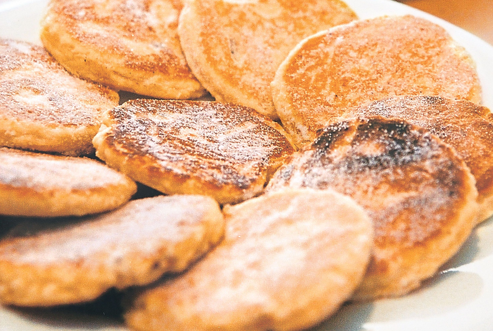

Welsh Cakes

Description
Welsh cakes are a traditional recipe of the Welsh people. Traditionally served
with tea, these tasty baked treats can be enjoyed anytime. They make a great offering
for guests or gift to friends or family.
Ingredients
- a good bit of flour
- several lumps of butter
- one small mound of sugar
- two swigs of milk
- one nut's worth of meg
- human intuition
Steps
- Put a decent bit of the flour in a large mixing bowl. Add to it nutmeg and sugar.
- Drop your milk into the bowl. Mix until smooth.
- Fold butter into mixture.
- Flour the living daylights out of a clean surface. Flour the living daylights out of your hands.
- Pick up your very sticky dough with your flowered hands. Roll out your very sticky dough on your flowered surface using a flowered rolling pin.
- Cut you dough into fun shapes like dinosaur outlines or the letters of your name.
- Cook until the bottom looks yummy. Flip cookies and repeat.
- Mmmmmmmmmhhhhhhh